Plotting Time Series Networks
tsn package authors
Source:vignettes/plotting-time-series-networks.Rmd
plotting-time-series-networks.RmdIntroduction
A plot of a time series network determines which aspect of the data is shown: the measured temporal sequence, the states assigned to observations, or the relational structure defined by the network. These views describe different aspects of the same analysis and should not be interpreted as equivalent representations.
The plotting methods in tsn select the
representation with the type argument. Additional arguments
control the visual encoding within that representation, including state
placement, point display, colour, labels, node size, and edge
annotation. When type is omitted, plot() uses
the default type for the corresponding result class.
This vignette uses one pleasure series throughout. Each
analytical object is constructed immediately before its first plot,
keeping the relationship between the analysis and its graphical
representation explicit.
| Result class | Plot types | Default |
|---|---|---|
Discrete states from discretize()
|
"overlay", "ribbon",
"heatmap", "stack"
|
"overlay" |
Local direction from trend()
|
"points", "ribbon",
"heatmap", "panels"
|
"points" |
Network from tsn() or vg()
|
"network", "series"
|
"network" |
| TNA-family model |
"combined", "network",
"series"
|
"combined" |
Model collection from series_networks()
|
"network" |
"network" |
For network objects, "network" displays the nodes and
edges defined by the model, whereas "series" places the
network structure in relation to the original time series. For
TNA-family models, "combined" displays the state sequence
together with the corresponding transition network, while
"network" focuses on the state-to-state relationships
alone. The choice of plot type therefore determines whether the figure
is used to examine the temporal sequence, the state representation, or
the network structure.
Data
The examples use the first 60 observations of pleasure
from the motivation data. A 25-observation segment is used
for visibility analysis so that individual nodes and edges remain
distinguishable.
Discrete-state plots
The plot() method for a tsn_states object
provides four representations of the same discretization.
type |
Graphical encoding | Scientific use |
|---|---|---|
"overlay" |
State value bands behind the measured series | Relating assigned states to their value ranges and boundaries |
"ribbon" |
State strip beneath an unobscured series | Retaining exact variation when state changes are frequent |
"heatmap" |
One categorical tile per observation | Displaying the state sequence as a compact temporal signature |
"stack" |
Companion series aligned above the discretized series | Relating the states of a derived quantity to its source measurement |
The principal arguments are type and
series. For overlays, overlay selects
horizontal ranges (the default), vertical regions, or no shading;
lines can add state boundaries; and min_run
suppresses very short displayed runs without changing the fitted states.
The arguments points, palette,
alpha, legend, and grid control
graphical appearance. Heatmaps additionally accept sort and
border. The stack view requires a numeric companion
supplied with with; shade and
color_line determine how the state classification is
carried across the two panels.
Overlay
The series is first discretized into three empirical quantile states
and then plotted. Because "overlay" is the default type, no
plotting argument is required.
states <- discretize(
data = pleasure,
series = "pleasure",
labels = c("Low", "Middle", "High")
)
plot(states)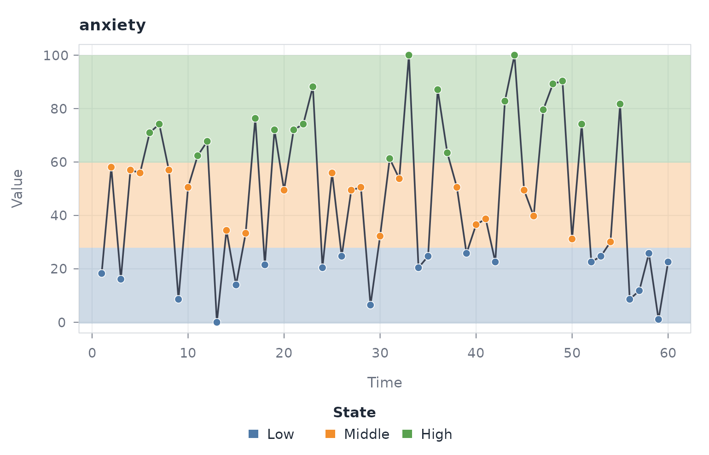
The horizontal bands identify the value ranges associated with the three states, while the line retains the measured observations. This view emphasizes the relationship between state membership, magnitude, and the fitted boundaries.
Ribbon
plot(states, "ribbon")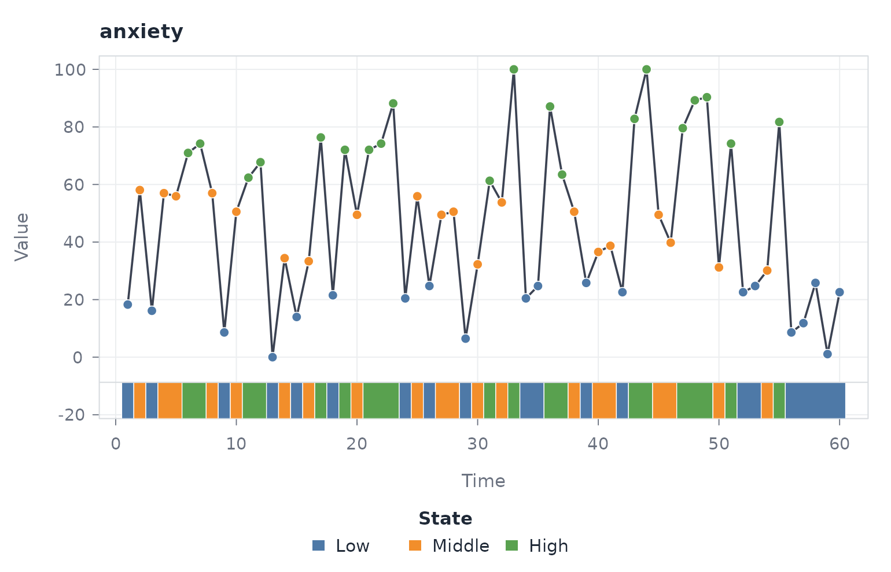
The ribbon places the state encoding outside the measurement panel. It is preferable when vertical shading would conceal short-range variation.
Heatmap
plot(states, "heatmap")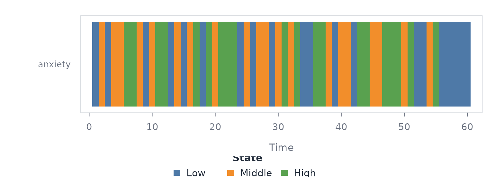
Each tile represents one time point and its colour represents the assigned state. For one series, the result is a compact categorical timeline.
Stack
The stack view is appropriate when states are defined from a transformation of the measured series. Here, one-step changes are discretized and plotted beneath the original observations.
changes <- with(pleasure, c(0, diff(pleasure)))
change_states <- discretize(
data = changes,
labels = c("Negative", "Stable", "Positive")
)
plot(
change_states,
"stack",
with = with(pleasure, pleasure),
with_label = "Pleasure"
)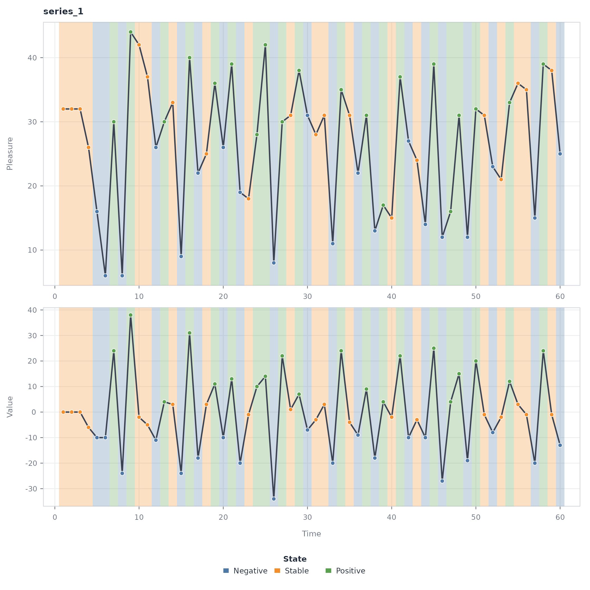
The shared time axis permits changes in the original measurement to be read directly against their categorical representation.
Local-direction plots
The plot() method for a tsn_trend object
provides four views of the rolling direction classification.
type |
Graphical encoding | Scientific use |
|---|---|---|
"points" |
Observations coloured by direction | Locating ascending, descending, flat, and turbulent intervals |
"ribbon" |
Direction strip beneath the measured series | Separating classification from measurement variation |
"heatmap" |
Categorical direction tiles | Summarizing the timing of local direction |
"panels" |
Measured series above the rolling trend metric | Diagnosing how the numerical metric produces the classification |
The common arguments series, palette,
legend, and grid control selection and
presentation. The line and point encodings are modified with
line_color, line_width, and
point_size. In the panel view, flat_band
controls whether the classification threshold is shown. Heatmap
presentation can be modified with sort and
border.
Points
The local-direction model is fitted and immediately plotted using its default point representation.
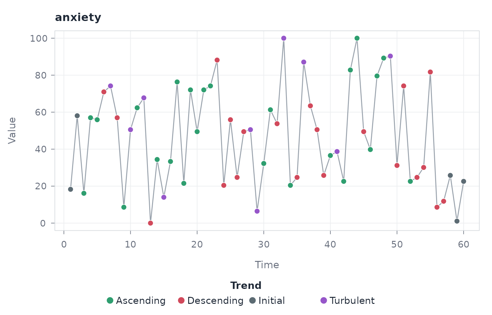
Colour encodes the local trend state at each observation. The view retains individual measurements and is therefore suited to locating directional changes precisely in time.
Ribbon
plot(directions, "ribbon")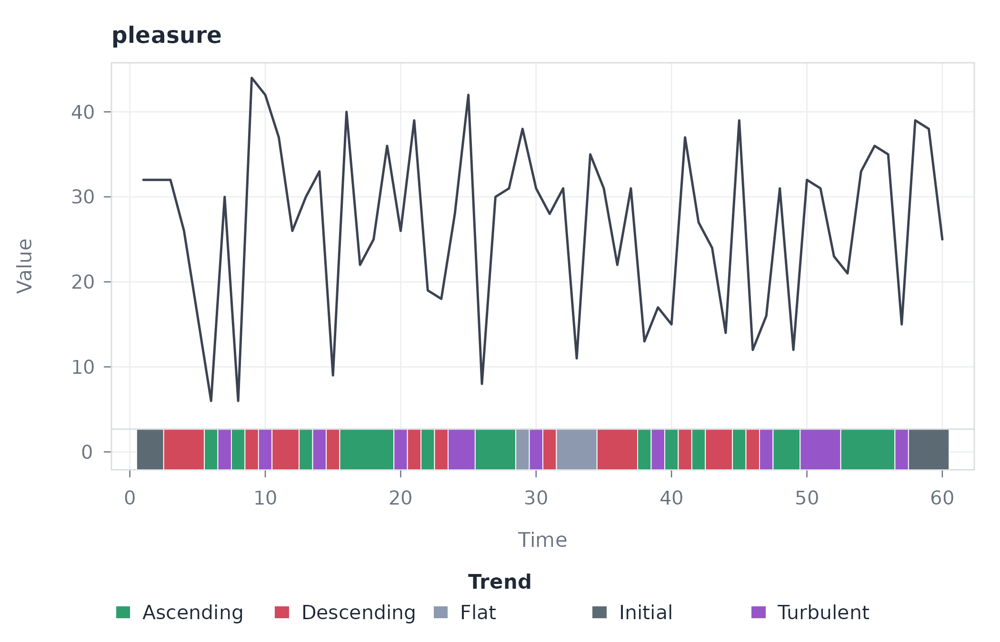
The ribbon is useful when adjacent classifications change frequently, because the measured line remains visually continuous.
Heatmap
plot(directions, "heatmap")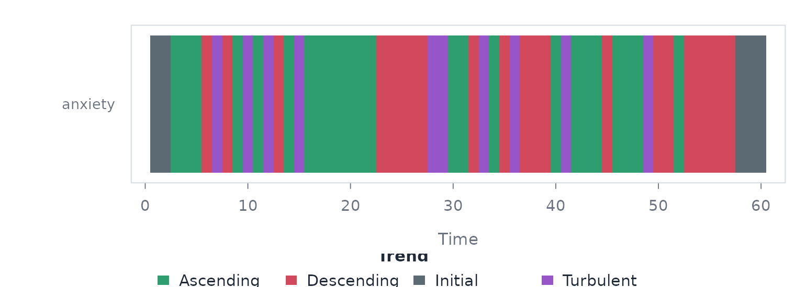
The heatmap removes magnitude and preserves only temporal classification. It should therefore be interpreted as a map of direction, not as a plot of the observed values.
Panels
plot(directions, "panels")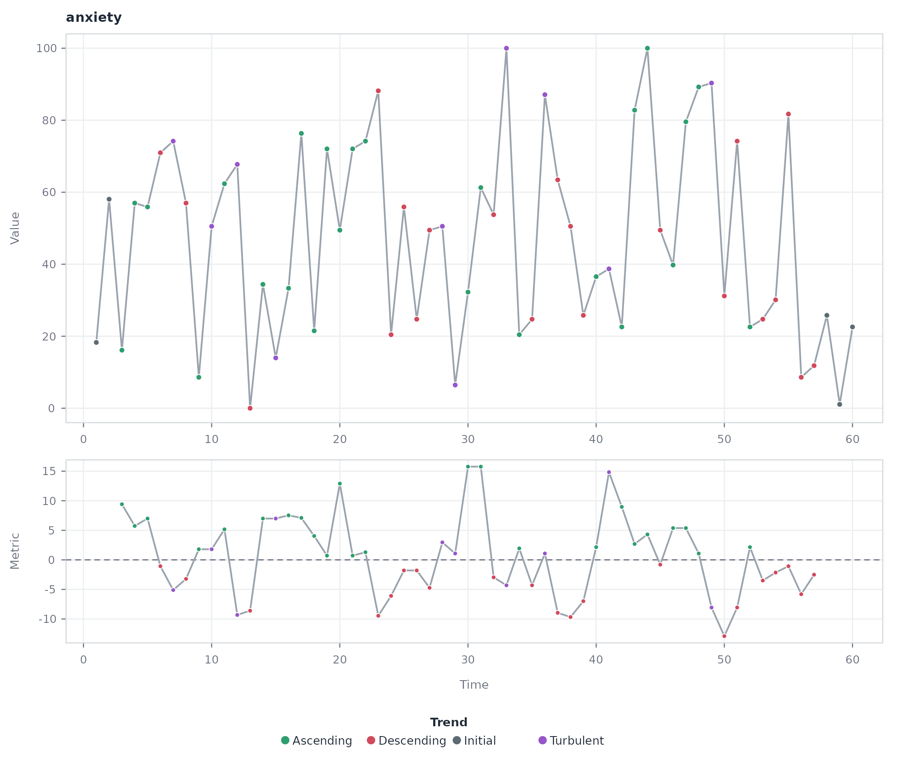
The lower panel displays the rolling metric used to assign direction. This is the appropriate diagnostic view for evaluating crossings of the flat band and their correspondence with the measured series.
Constructed-network plots
Objects returned by tsn() and vg() provide
two plot types.
type |
Graphical encoding | Scientific use |
|---|---|---|
"network" |
Nodes and edges of the constructed network | Examining relational structure, central observations, and connectivity |
"series" |
Measurements retained in the network object | Verifying the temporal data from which the network was constructed |
For type = "network", graphical arguments are passed to
cograph::splot(). Important options include
layout, labels, node_size,
node_fill, edge_color, and edge-label
controls. The tsn defaults use a spring layout, degree-based node
sizing, and unobtrusive edge styling. For type = "series",
arguments such as overlay, points,
trend, legend, and grid modify
the temporal view.
Network
A horizontal visibility graph is constructed and immediately plotted.
The default type is "network".
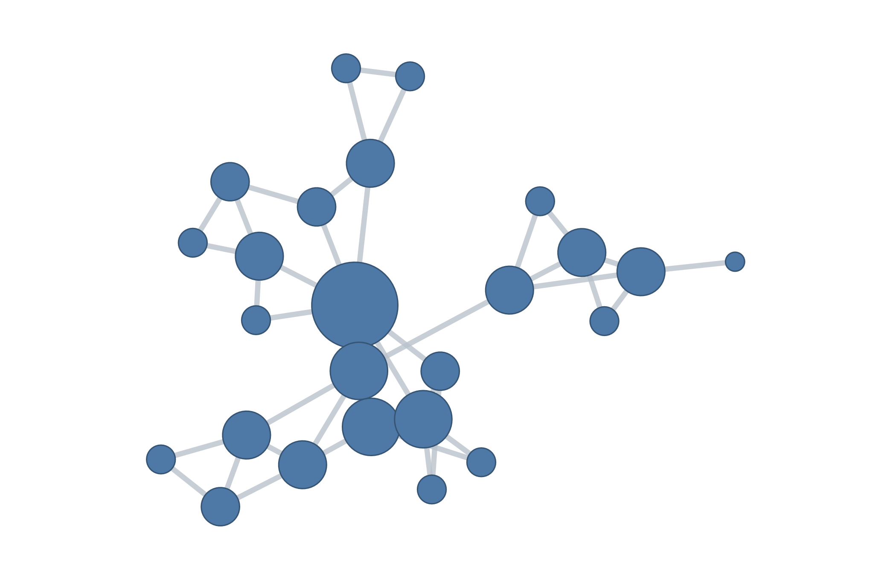
Nodes represent observations and edges represent horizontal visibility. The network view removes the explicit time axis and emphasizes which observations remain mutually visible across intervening values.
Transition Network Analysis plots
The TNA family comprises models returned by ts_tna(),
ts_ftna(), ts_cna(), and
ts_atna(). Each model supports the same three plot
types.
type |
Graphical encoding | Scientific use |
|---|---|---|
"combined" |
Source sequence and transition network in one figure | Connecting temporal state membership to estimated state relationships |
"network" |
Transition network only | Examining edge weights, direction, and persistence |
"series" |
State-classified source sequence only | Inspecting the sequence used to estimate transition relationships |
The type argument selects the overall representation.
Within the combined view, network_width controls the
relative width of the network panel. overlay and
ribbon determine how states are displayed with the source
series, while points, alpha, and
palette control its appearance. Network encoding is
modified with node_size, node_scale, and
show_weights. Arguments not consumed by the tsn method are
passed to cograph::splot().
The network argument selects a per-series or summary
network. These coincide for the single source series used here. The
distinction becomes relevant only when a model contains more than one
source sequence.
Combined
The state sequence is converted to a Transition Network and immediately plotted. The combined representation is the default.
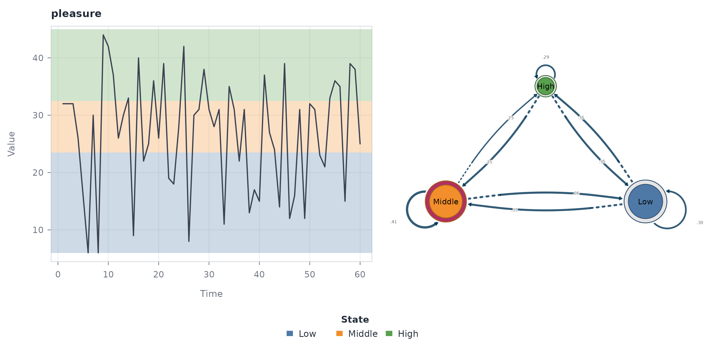
The temporal panel preserves the observations and their assigned states. The network panel represents states as nodes and conditional transition probabilities as directed edges. Their juxtaposition makes the derivation of the relational structure explicit.
Extracted-model plots
series_networks() creates an indexed collection of
source-specific network models. Its series argument selects
a model when the collection contains more than one source. With the
single series used here, no selection argument is required. The model is
extracted and plotted in the same code block.
probabilities <- ts_tna(states)
individual <- series_networks(probabilities)
plot(individual)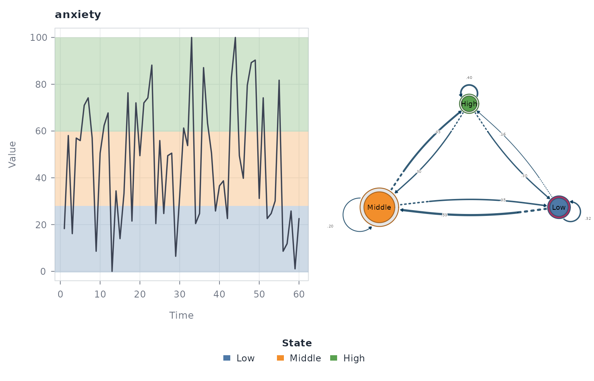
The plot uses the TNA network representation and retains the
provenance stored by series_networks().
Selecting a plot
The plot type should follow the scientific question rather than the desired appearance alone.
| Scientific question | Recommended view |
|---|---|
| When do discrete states or local directions occur? | State overlay, ribbon, or trend points |
| How was a classification produced? | Trend panels or a stacked state view |
| What temporal sequence generated the network? | Source-series view |
| What relationships define the constructed network? | Network view |
| How does a state sequence relate to its transition structure? | Combined TNA view |
Arguments controlling colour, size, labels, and layout change the graphical encoding but do not change the fitted object. Consequently, interpretive claims should follow the construction method and edge definition stored in the model, not the visual prominence created by a particular style option.